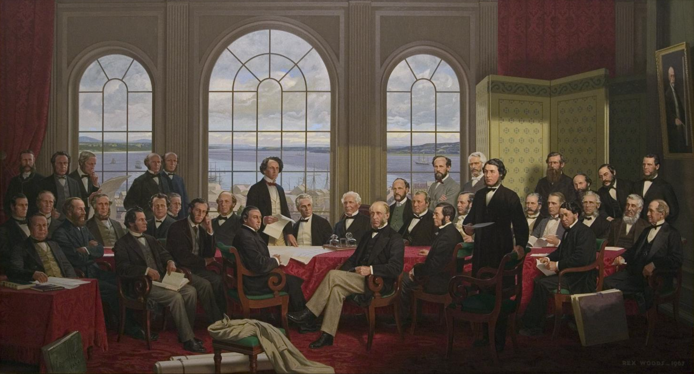

Federalism
Canada is a federal state. This means that political power is shared between two orders of government: the federal government and the provincial governments. Each government is assigned different spheres of jurisdiction by the Constitution Act, 1867, most importantly in ss. 91 and 92.

Fathers of Confederation
Robert Harris’s Fathers of Confederation, perhaps Canada’s best-known historical painting, was destroyed in the 1916 fire at the original Parliament Building. An aging Harris had declined to reproduce the work, and in 1964 the Confederation Life Assurance Co. hired Toronto artist Rex Woods to create a version of the original composition. Woods increased the dimensions to 3.5 meters by two metres, added three figures and, in the background, a portrait of Harris.
The original painting pictured delegates to the Charlottetown and Quebec conferences that laid the ground for the confederation of Canada in 1864. The sobriquet “Fathers of Confederation” arose later and eventually became the title of the painting.
4.1 Introduction to the Division of Powers
Readings
Constitutional Law: Chapter 4 (pp. 94-97), Chapter 7 (pp. 165-173) including Simeon article, Chapters 4 (pp. 73-80) and Chapter 6 (pp. 148-151).
If legislative supremacy was a fundamental constitutional principle, how could courts review statutes and declare them to be void? WJ Ritchie, Chief Justice of New Brunswick, responded at The Queen v. Chandler; In re Hazleton, 1869 CanLII 96, at 556-557:
We must recognize the undoubted legislative control of the British Parliament, and give full force and effect to the statute of the Supreme Legislature, and ignore the Act of the sub-ordinate, when ... they are repugnant and in conflict.
That is, courts would interpret the BNA Act to determine whether it gave the power to enact the statute. Chief Justice Ritchie’s views, however, quickly took hold in the Canadian legal imagination, and thereafter judicial review was so firmly established that it needed little or no explanation or justification.
Citizens Insurance Co of Canada v Parsons (1881), 7 App Cas 96, [1881-5] All ER Rep 1179 (UKJCPC), rev’g Citizens’ and The Queen Insurance Cos v Parsons, 1880 CanLII 6. SIR MONTAGUE SMITH:
It could not have been the intention that a conflict should exist; and, in order to prevent such a result, the two sections (ss. 91, 92) must be read together, and the language of one interpreted, and, where necessary, modified, by that of the other.
The first question to be decided is, whether the Act [provincial legislature] ... falls within any of the classes of subjects enumerated in s. 92, ... for if it does not, it can be of no validity.
[Second], whether, notwithstanding this is so, the subject of the Act does not also fall within one of the enumerated classes of subjects in s. 91, and whether the power of the provincial legislature is or is not thereby overborne.
THE NATURE OF FEDERALISM
A federal state is a political contrivance intended to reconcile national unity and power with the maintenance of “state rights.” For the method by which federalism attempts to reconcile ... consists of the formation of a constitution under which the ordinary powers of sovereignty are elaborately divided between the common or national government and the separate states.
Whatever concerns the nation as a whole should be placed under the control of the national government. All matters which are not primarily of common interest should remain in the hands of the several States.
Three leading characteristics of completely developed federalism:
- the supremacy of the constitution
- the distribution among bodies with limited and co-ordinate authority of the different powers of government
- the authority of the Courts to act as interpreters of the constitution.
THE COMPACT THEORY
Thomas Jean Jacques Loranger, a Quebec judge, set out the elements of the “federal compact”:
- In constituting themselves into a confederation, the provinces did not intend to renounce, and in fact never did renounce their autonomy. ... it is from these provincial powers that has arisen the federal government, to which the provinces have ceded a portion of their rights, property and revenues.
- The federal compact did not create a single new power. The part now belonging to the federal government was taken from the jurisdiction of the provinces.
THE POWER OF DISALLOWANCE
The power, as expressed in ss 56 and 90 of the Constitution Act, 1867, entitles the governor general, acting on the advice of the federal Cabinet, to disallow (or veto) any enactment of the provincial legislatures.
By the mid-20th century, the federal power of disallowance fell into disuse.
Canada (AG) v Ontario (AG)
- Canada (Attorney General) v Ontario (Attorney General), 1937 CanLII 362 (UK JCPC), on appeal from References re the Weekly Rest in Industrial Undertakings Act, The Minimum Wages Act, And The Limitation of Hours of Work Act, 1936 CanLII 24.
- Within the British Empire there is a well-established rule that the making of a treaty is an executive act, while the performance of its obligations, if they entail alteration of the existing domestic law, requires legislative action.
- The first ground upon which counsel for the Dominion sought to base the validity of the legislation was s. 132 ... it was not contemplated in 1867 that the Dominion would possess treaty-making powers, it is impossible to strain the section so as to cover the un-contemplated event. It appears that all the members of the Supreme Court rejected the contention based on s. 132, and their Lordships are in full agreement with them.
- the validity of the legislation can only depend upon ss. 91 and 92. If the new functions affect the classes of subjects enumerated in s. 92, legislation to support the new functions is in the competence of the Provincial Legislatures only. If they do not, the competence of the Dominion Legislature is declared by s. 91 and existed ab origine. In other words, the Dominion cannot, merely by making promises to foreign countries, clothe itself with legislative authority inconsistent with the constitution which gave it birth.
- But the legislative powers remain distributed, and if in the exercise of her new functions ... when they deal with provincial classes of subjects, be dealt with by the totality of powers, in other words by co-operation between the Dominion and the Provinces.
4.2 Interpreting the Division of Powers: Validity
Readings
Constitutional Law: Chapter 8 (pp. 173-184), (pp. 184-191) and (pp. 191-225)
There are three kinds of arguments that can be made to challenge a law on the ground of division of powers.
- First, if the dominant characteristic of a law relates to a matter that is beyond the enacting legislature's jurisdiction, the law is invalid.
- Second, even if the law is validly enacted, it may have to be limited in its application in order that it not touch upon matters at the core of the other level of government's jurisdiction (this is known as the doctrine of "inter-jurisdictional immunity").
- used more to limit provincial power rather than federal's.
- the inter-jurisdictional immunity doctrine runs against the dominant tide of modern, flexible Canadian federalism. Court has downgraded the importance of this doctrine.
- Finally, even if a provincial law is valid, and even if it is applicable, it will be made inoperative if it conflicts a valid federal statute that relates to the same facts (this is the doctrine of federal "paramountcy").
Challenges to the validity
Challenges to the validity of legislation can generally be made equally against either federal or provincial legislation and are resolved on the basis of three doctrines that the courts have fashioned over time to help them work their way through the different kinds of legal issues that such challenges can pose:
- the pith and substance doctrine,
- the double aspect doctrine, and
- the ancillary powers doctrine.
What do judges take into account when identifying the most important characteristic, or the “pith and substance” of a law?
- social and economic effects of the law, possibly including the way it is actually administered in practice
- purpose of the law as revealed by political debates in the legislature
- broad principles and values about Canadian federalism
Sections 91 & 92 grant each level of government the power to enact laws in relation to all matters coming within the classes of subjects enumerated. The items on the lists are the “classes of subjects” that fall within the jurisdiction of each level of government.
If a legislature enacts laws that relate to matters that do NOT fall within one of the classes of subjects over which it has jurisdiction, that law is INVALID. The enacting legislature did not have the constitutional authority to create that legislation. The process of assessing the validity of a law is described as a process of “classification.” The law has to be matched up with a matter that falls within one of the classes of subjects in section 91 or 92.
The process of classification has three steps.
- Identification of the matter of the statute
- Delineation of the scope of the competing classifications
- Determination of the class into which the challenged statute falls
There are three things to note in particular about the classification process.
- First, the lists in sections 91 and 92 do not encompass everything that a government could potentially want to legislate about. For example, given that the lists were created in the 19th century, courts had to decide subsequently where to assign jurisdiction over things like radio and aeronautics.
- Second, it is often the case that the definition of the “matter” of a statute is determinative of the outcome of the challenge. Judges are aware of this, and so the identification of the matter is not a neutral exercise of logic. Rather, it often involves consideration of many important constitutional values and exercise of judgment about how the federal system should work.
- Finally, in federalism cases, the impugned legislation benefits from a presumption of constitutionality. This means that if there are competing plausible interpretations of the law, the court will choose the one that supports the validity of the law.
Richard E Simeon, “Criteria for Choice in Federal Systems”
- Federalism can be evaluated first from the perspective of community. Second, federalism can be evaluated from the perspective of democratic theory. Third, federalism can be assessed from the vantage point of functional effectiveness.
- In the present context, the competing images of community can be summarized in terms of a conflict between three drives: country-building, province-building, and two-nation or Quebec nation-building.
- We focus on nation and province because it is these communities which have been institutionalized, and which have governments with the capacity to define and articulate community interests. ... For this reason, arguments about political community in Canada tend to focus on the relative role and power of federal and provincial authorities.
- The second set of criteria may be labelled functional. Powers are allocated, according to a division of labour criterion: which level can most efficiently and effectively carry out any given responsibility of contemporary government?
- The third perspective is that of democratic theory.
- The first approach is primarily concerned with protecting citizens from governments ... its fundamental purpose is to minimize the possibility of tyranny, especially majority tyranny, by ensuring that power would be fragmented among competing governmental authorities. However, Federalism does not resolve the classic problem of majority versus minority rights.
- A second strand of democratic theorizing stresses the advantages of smaller units in terms of governmental responsiveness and citizen participation. A small unit may also pose a difficult dilemma: one may be able to achieve influence, but that may be negated by the inability of the unit itself to achieve one’s goal because it lacks the resources
- Note that the decision to select one of Simeon’s three criteria of choice as most appropriate for a particular kind of federalism dispute does not mean that that dispute is going to be resolved in a particular manner, that is, in favour of either the provincial or the federal level of government.
- Is it possible to generalize about the appropriateness of using one criterion rather than another in certain kinds of cases? Could we argue, for example, that community should be preferred when the impugned legislation relates to the social sphere, functional efficiency when the impugned legislation relates to the economic sphere, and democracy when the impugned legislation relates to the political sphere? Is it even possible to categorize legislation in such a manner?
VALIDITY: CHARACTERIZATION OF LAWS
A. PITH AND SUBSTANCE
The function of this doctrine is to assist courts in determining what the true “matter” of the impugned legislation should be understood to be. Once they have determined the matter, judges can then turn their minds to which of the competing federal and provincial classes of subjects that matter can be said to come within (often referred to as “classification”).
Katherine Swinton, The Supreme Court and Canadian Federalism: The Laskin-Dickson Years
- Every federal system requires a distribution of legislative powers between the national and regional governments, and sections 91 and 92 perform that function in Canada.
- It can, be broken down into three steps: identification of the “matter” of the statute, delineation of the scope of the competing classes, and then a determination of the class into which the challenged statute falls.
- In determining the meaning or matter of legislation (first step), the starting place is the statutory context. In addition, a court may look to the purpose of the legislation. The effects of the legislation may also be relevant. The dominant form of inquiry is into purpose, that is, to the problem underlying the legislation which the legislature is trying to address.
- Despite the reference to the “exclusivity” of the classes in sections 91 and 92, there is opportunity for extensive overlapping regulation. Similar laws may fit within both federal and provincial heads of power. The courts often uphold such legislation using the “double aspect doctrine,” whereby they acknowledge that some laws may have both federal and provincial purposes.
- there are competing perspectives of the ideal system, with views about the proper distribution of legislative powers shaped by the individual’s belief in other values promoted or protected by federalism, such as a stronger national or regional community responsive to the country’s needs or loyalties, or increased economic efficiency.
William R Lederman, “Classification of Laws and the British North America Act”
- the categories of laws enumerated in sections 91 and 92 are not in the logical sense mutually exclusive; they overlap or encroach upon one another in many more respects than is usually realized.
- When a particular rule has features of meaning relevant to both federal and provincial classes of laws, then the question must be asked, is it better for the people that this thing be done on a national level, or on a provincial level? Inevitably, widely prevailing beliefs in the country about these issues will be influential and presumably the judges should strive to implement such beliefs.
- the challenged law will have features of meaning relevant to both federal and provincial classes of laws. Then our judges must rather ask, Who is the better physician to prescribe in this way for this malady?
- The principles of stare decisis are important in our courts, but the degree of certainty and predictability their operation can provide is often much overestimated or misconceived.
The Supreme Court of Canada’s general approach to questions of validity in the federalism context was summarized recently by Wagner CJ in References re Greenhouse Gas Pollution Pricing Act, 2021 SCC 11:
[51] At the first stage of the division of powers analysis, a court must consider the purpose and effects of the challenged statute or provision in order to identify its “pith and substance,” or true subject matter.
R. v. Morgentaler, 1993 CanLII 74, continues to illustrate the kinds of factors a court can take into account in determining the matter or the pith and substance of a law.
R. v. Morgentaler
- The question in this appeal is whether the Nova Scotia Medical Services Act, RSNS 1989, c. 281, and the regulation made under the Act, NS Reg. 152/89, are ultra vires the province of Nova Scotia on the ground that they are in pith and substance criminal law.
- On the basis of the analysis that follows I conclude that the Medical Services Act and Medical Services Designation Regulation are criminal law in pith and substance and consequently ultra vires the province of Nova Scotia. The appeal must therefore be dismissed.
- A law’s “matter” is its leading feature or true character, often described as its pith and substance. There is no single test for a law’s pith and substance. While both the purpose and effect of the law are relevant considerations, it is often the case that the legislation’s dominant purpose or aim is the key to constitutional validity.
- Evidence of the “effect” of legislation can be relevant in two ways: to establish “legal effect” and to establish “practical effect.”
- In determining the background, context and purpose of challenged legislation, the court is entitled to refer to extrinsic evidence of various kinds provided it is relevant and not inherently unreliable.
- Provincial legislation has been held invalid when it employs language “virtually indistinguishable” from that found in the Criminal Code. The duplication of Criminal Code language may raise an inference that the province has stepped into the realm of the criminal law; the more exact the reproduction, the stronger the inference.
- The primary objective of the legislation was to prohibit abortions outside hospitals as socially undesirable conduct, and any concern with the safety and security of pregnant women or with health care policy, hospitals or the regulation of the medical profession was merely ancillary.
When the courts determine that legislation on its face addresses matters that are within its jurisdiction, but in pith and substance it is directed at matters outside its jurisdiction, they normally say the legislation is “colourable.”
In its decision in Reference re Fire-arms Act (Can), 2000 SCC 31, the Supreme Court of Canada provided the following description of the colourability doctrine in the context of a broader discussion of the way in which a law’s effects are taken into account in the characterization process:
[18] Determining the legal effects of a law involves considering how the law will operate and how it will affect Canadians. ... the inquiry is directed to how the law sets out to achieve its purpose in order to better understand its “total meaning”. In some cases, the effects of the law may suggest a purpose other than that which is stated in the law. In other words, a law may say that it intends to do one thing and actually do something else. Where the effects of the law diverge substantially from the stated aim, it is sometimes said to be “colourable.”
The law with respect to the evidence that can be brought to bear in characterizing legislation has recently been summarized by Karakatsanis J in Reference re Genetic Non-Discrimination Act, 2020 SCC 17:
[34] To determine a law’s purpose, a court looks to both intrinsic and extrinsic evidence. Intrinsic evidence includes the text of the law, and provisions that expressly set out the law’s purpose, as well as the law’s title and structure. Extrinsic evidence includes statements made during parliamentary proceedings and drawn from government publications: Reference re Firearms Act (Can.), 2000 SCC 31, at para. 17.
Courts are still on occasion asked to define the scope and meaning of one of the heads of power in s 91 or 92. That occurred in a reference by the Quebec government to the Quebec Court of Appeal that ended up in the Supreme Court of Canada, Reference re Employment Insurance Act (Can), ss 22 and 23, 2005 SCC 56, excerpted below.
The specific head of power at issue in that case was s 91(2A), which grants jurisdiction to Parliament over unemployment insurance. s 91(2A) was added to the list of heads of power in s 91 in 1940 after the Privy Council struck down the Employment and Social Insurance Act, SC 1935, c 38, a federal statute enacted in 1934 as part of Canada’s “New Deal” that represented the first attempt to provide unemployment insurance to Canadian workers. (Canada (Attorney General) v. Ontario (Attorney General), 1937 CanLII 363 (UK JCPC))
The primary interpretive question raised by the 2005 reference was whether the courts should be bound, as the government of Quebec argued, to give effect to the particular conception of unemployment insurance that the federal and provincial politicians responsible for adding s 91(2A) to the federal catalogue of powers in 1940 had in mind.
Reference re Employment Insurance Act (Can), ss 22 and 23, 2005 SCC 56
- [9] In giving them predominant weight, the Quebec Court of Appeal adopted an original intent approach to interpreting the Constitution rather than the progressive approach the Court has taken for a number of years.
- [40] If the objectives of the framers are taken as a starting point, it will be easier to determine the scope of the jurisdiction that was transferred, and then to determine how it may be adapted to contemporary realities.
- [68] In pith and substance, maternity benefits are a mechanism for providing replacement income during an interruption of work. This is consistent with the essence of the federal jurisdiction over unemployment insurance。
The Supreme Court of Canada recently summarized the modern approach with regard to interpretation of constitutional provisions in R. v. Comeau, 2018 SCC 15:
[52] The text of the provision must be read harmoniously with the context and purpose of the statute. Constitutional texts must also be interpreted in a manner that is sensitive to evolving circumstances because they “must continually adapt to cover new realities”.Finally, the underlying organizational principles of the constitutional texts, like federalism, may be relevant to their interpretation.
B. DOUBLE ASPECT DOCTRINE
The doctrine has its origins in Hodge v The Queen (1883), 9 AC 117 (PC). Lord Fitzgerald held that “subjects [here, the liquor trade] which in one aspect and for one purpose fall within s. 92, may in another aspect and for another purpose fall within s. 91”. The mere fact that the Privy Council had upheld federal legislation that took a prohibitory approach to the liquor trade did not therefore preclude the provincial legislatures from taking a regulatory approach to it.
Applying the double aspect doctrine came to mean accepting that the area in question was one in which both Parliament and the provincial legislatures have the authority to legislate.
This account of the development of the double aspect doctrine comes with two important caveats:
- The first is that, in spite of the judiciary’s growing fondness for the doctrine over time, there are a few areas in which it has never been applied. They include, most notably, the regulation of trade and labour relations.
- The second caveat is that some members of the Canadian judiciary have expressed serious reservations about the broader view of the double aspect doctrine. The primary reason was, almost certainly the federal paramountcy doctrine, under which valid provincial legislation that conflicts with valid federal legislation must be held inoperative to the extent of the conflict.
William Lederman's approach to division of powers questions:
- (1) whether legislation being challenged on division of powers grounds had a federal aspect
- (2) whether it also had a provincial aspect
- (3) if the legislation was held to have both federal and provincial aspects, which of those aspects could be said to be the more important
C. ANCILLARY POWERS
The ancillary powers doctrine is used in cases where the challenge is to a part of a larger scheme of legislation rather than to the entire scheme. If the larger scheme of which the impugned provision forms part is constitutionally valid, the impugned provision may also be found valid because of its relationship to the larger scheme.
The ancillary powers doctrine, like the pith and substance doctrine, permits the federal and provincial governments to intrude, sometimes quite substantially, on the other level of government’s jurisdiction as long as the most important features of their laws remain within their jurisdiction.
General Motors of Canada Ltd. v. City National Leasing, 1989 CanLII 133 (SCC)
- The General Motors ruling is notable for its holding that the Combines Investigation Act (now the Competition Act, RSC 1985, c C-34) is a valid exercise of the federal power over the “general regulation of trade”. It is also notable for setting out the general approach to the necessarily incidental doctrine.
- The steps in the analysis may be summarized as follows:
- First, the court must determine whether the impugned provision can be viewed as intruding on provincial powers, and if so to what extent (if it does not intrude, then the only possible issue is the validity of the act).
- Second, the court must establish whether the act itself (or a sever-able part of it) is valid.
- If the scheme is not valid, that is the end of the inquiry.
- If the scheme of regulation is declared valid, the court must then determine whether the impugned provision is sufficiently integrated with the scheme that it can be upheld by virtue of that relationship.
The approach to the ancillary powers doctrine outlined by Dickson CJ is equally applicable when a provision of a provincial law that is part of a larger scheme of regulation is challenged on the ground that it encroaches on a federal area of jurisdiction.
The Court has not always applied the doctrine in such circumstances and has instead applied a standard pith and substance analysis, without any reference to the three-step framework prescribed in General Motors.
Quebec (Attorney General) v. Lacombe, 2010 SCC 38
- Chief Justice McLachlin, was of the view that, because the impugned by-law had taken the form of an amendment to the municipality’s general zoning by-law, the outcome of the challenge turned on the application of the ancillary powers doctrine, which she applied in accordance with the analytical framework established in General Motors.
- Viewed on its own, the by-law amounted to an unconstitutional trenching on federal jurisdiction over aeronautics. She accepted that the general zoning by-law was valid provincial legislation under s 92(13) and then proceeded to address the question of whether the impugned by-law could be upheld because of its relationship with the general zoning by-law.
- [48] ... the application of ancillary powers to habilitate prima facie invalid legislation requires that the impugned provision, both rationally and in its function, further the purposes of the valid legislative scheme of which it is said to be part. ... [T]he basic purpose of this inquiry is to determine whether the impugned measure not only supplements, but complements, the legislative scheme; it is not enough that the measure be merely supplemental.
- [58] I conclude that the amendments brought by by-law No. 260 do not meet the rational functional connection test in General Motors.